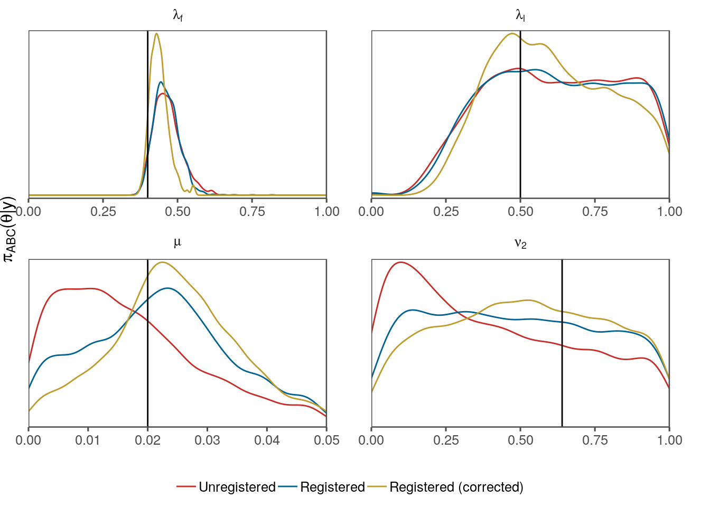
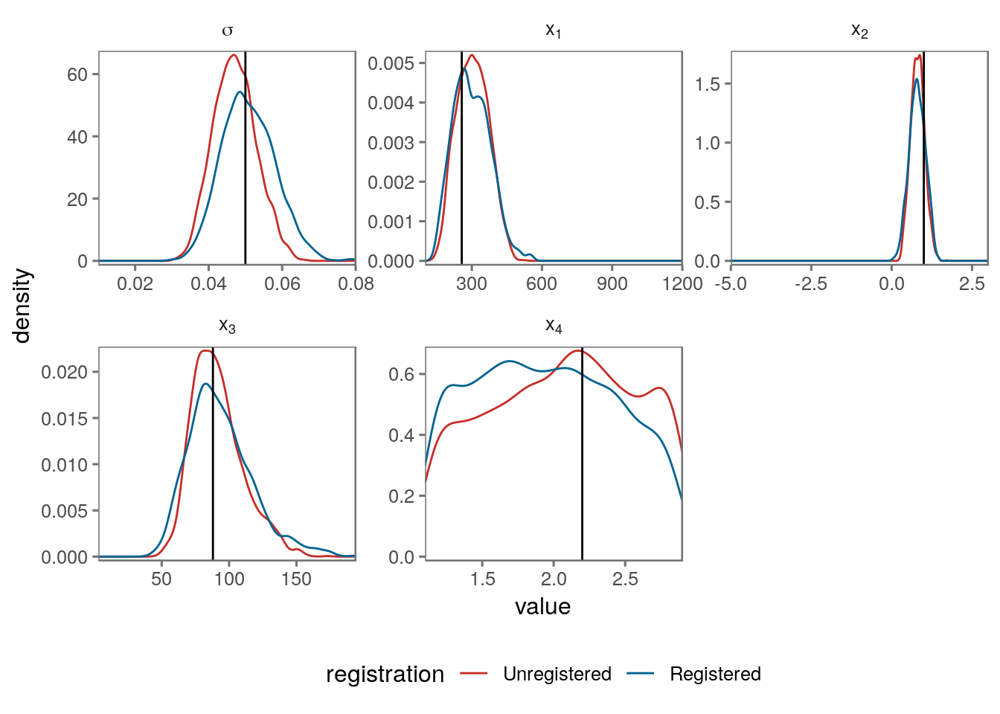

Likelihood-free inference on functional data requires the specification of sensible distance measures on these functions. We consider the problem of functional data displaying not only amplitude variation but also phase variation. We show how current methods in curve registration can be applied to approximate Bayesian computation with the help of kernel-based methods recently developed for metrics for probability measures.
Functional data analysis (FDA) address statistical problems involving a functional dataset, where the data comprise a set of functions (Hsing and Eubank 2015). A functional random variable \(\mathsf{y}\) is a random variable which takes values in a function space \(\mathsf{f} \in \mathcal{F}\) with associated probability measure \(p\). We consider function spaces of the form \(\mathbb{R}^{[0, 1]}\), that is \(\mathsf{f}: [0, 1] \mapsto \mathbb{R}\), transformations from different domain intervals is straight-forward. A functional dataset is a collection of observed functional random variables \(\mathsf{f}_1, \cdots, \mathsf{f}_n\). In practice the functional random variables are observed with error on a countable subset of the domain of the function and this is what is referred to as a functional dataset, which contains empirical functional random variables. An empirical functional random variable (EFRV) \(f_i\) is of the form \(\{ (t_{i,1},y_{i,1}), \cdots , (t_{i,j}, y_{i,j}), \cdots, (t_{i,n_i}, y_{i,n_i}) \}\), for fixed sampling points \(t_i = \{t_{i,1}, \cdots, t_{i,n_i} \}\) and corresponding observed functional outputs \(y_i = y_{i,1}, \cdots, y_{i,n_i}\).
Common special-cases of functional datasets include longitudinal data and time series, however the field of FDA is much broader than this (Wang, Chiou, and Müller 2016). In analysis of functional data, a statistic of interest is an estimate of the mean function \(\mu(t) = \underset{{\mathsf{f}}\sim p}{{\mathsf{E}}}[\mathsf{f}](t)\). In the case of EFRVs with fixed sampling locations (\(t_1 = \cdots = t_i = \cdots = t_{n_i}\)) this is usually estimated with \(\hat{\mu}(t_{,j}) = 1/n_i \sum_{i = 1}^{n_i} y_j\). In either case it is possible that the resulting function is not an element of \(\mathcal{F}\) due to phase variation. For instance suppose \(\mathcal{F}\) is the set of Gaussian functions \(\phi(\mu,\sigma)\) with \(\mu \sim U(0, 5)\), \(\sigma = 1\). The mean function, in this case, is not Gaussian. In the next section we learn how problems of this sort are addressed in literature.
There are a variety of approaches in the literature which seek to address the provide statistical tools in the presence of phase variation, these include: dynamic time warping (Padoy et al. 2012,Wang, Gasser, and others (1997)); the Frechet distance (Rote 2007); curve registration and elastic functions (Srivastava et al. 2011). Applications of curve registration include: growth curves (Cheng et al. 2016); surgical workflow (Padoy et al. 2012).
We standardise the domain of \(\mathsf{f^*} \in \mathbb{R}^{[0, T]}\) from \([0,T]\) to \([0,1]\) by setting \(\mathsf{f}(t) = \mathsf{f^*}(t \times T)\). The idea of curve registration is to align elements of \(\mathcal{F}\) with warping functions \(\gamma_i: [0,1] \mapsto [0,1]\), such that elements of the set \(\mathcal{G} := \{\mathsf{f}_i \circ \gamma_i | \mathsf{f}_i \in \mathcal{F} \}\) have features which are aligned. We adopt the elastic functions approach of Srivastava et al. (2011), their approach is to find \(\gamma\) which minimises the Fisher-Rao metric. The distance used for this approach is the Fisher-Rao metric: \[\rho_{\text{FR}}({\mathsf{f}},{\mathsf{g}}) = \int [ q_{{\mathsf{f}}}(t) - q_{{\mathsf{g}}}(t) ]^2 \text{d} t , \] where \(q_f(t) = \text{sign}(f^{\prime}(t)) \times \sqrt{|f^{\prime}(t)|}\). We align a curve \({\mathsf{f}}\) to \({\mathsf{g}}\) by defining a warping function \(\gamma \in \Gamma\) where \(\Gamma = \{\gamma \in [0,1]^{[0, 1]} | \gamma \text{ is invertible and } \gamma(0) = 0 \}\) to minimise \(\rho_{\text{FR}}({\mathsf{f}}\circ \gamma, \tilde{{\mathsf{g}}})\). The advantage of using \(\rho_{\text{FR}}\) for curve registration is that: \[\rho_{\text{FR}}({\mathsf{f}}, {\mathsf{g}}) = \rho_{\text{FR}}({\mathsf{f}}\circ \gamma, {\mathsf{g}}\circ \gamma) \] in otherwords the Fisher-Rao metric is invariant to a shared warping. This implies that the discrepancy of amplitudes (amplitude distance) between \({\mathsf{f}}\) and \({\mathsf{g}}\), defined as \[\rho_{\text{amp}}({\mathsf{f}},{\mathsf{g}}) := \inf_{\gamma \in \Gamma} \rho_{\text{FR}}({\mathsf{f}}\circ \gamma, {\mathsf{g}})\] is symmetric (Srivastava et al. 2011). In practice EFRVs \(f\) are used in place of true unobserved functions \({\mathsf{f}}\) and the same approach proceeds with straight-forward approximations.
For simplicity and without loss of generality we consider problems where the functional dataset consists of a single observed EFRV \(f\). We extend curve registration to the likelihood-free domain with approximate Bayesian computation (ABC). We proceed now with a brief background of ABC, for a detailed exposition on the subject see Sisson, Fan, and Beaumont (2018).
ABC samplers sample \(\theta\) from the posterior distribution \(\pi(\theta|\mathbf{x})\) by sampling from, but not evaluating, the model \(p(\mathbf{x}|\theta)\). This is useful where \(p(\mathbf{x}|\theta)\) represents a complicated simulator for generating realisations \(\mathbf{x}_{\theta} \sim p(\cdot|\theta)\).
The theoretical foundation of ABC rests on the fact that if we draw samples \(\theta\) independently from the prior \(\pi(\theta)\) and use each \(\theta\) to generate a corresponding \(\mathbf{x}_{\theta}\) then the set \(\{\theta | \mathbf{x}_{\theta} = \mathbf{x}\}\) are sampled from \(\pi(\theta|\mathbf{x})\). Such an approach would never work in practice as the proportion of \(\mathbf{x}_{\theta}\) samples equal to \(\mathbf{x}\) for models with continuous support is zero. For this reason a dissimilarity \(\rho\) defined on the sample space is used to accept or weight realisations \(\mathbf{x}_{\theta}\) in relation to \(\mathbf{x}\) according to some threshold \(\epsilon>0\).
Dissimilarity, as defined by Jousselme and Maupin (2012), is a weaker notion than distance without the triangle inequality and where \(\mathbf{x}{=}\mathbf{y} \implies \rho(\mathbf{x}, \mathbf{y}){=}0\) is true but the converse \(\rho(\mathbf{x}, \mathbf{y}){=}0 \implies \mathbf{x}{=}\mathbf{y}\) is not necessarily true. For instance a common approach is to define \(\rho\) as a distance on lower dimensional summary statistics, this is equivalent to a dissimilarity on the sample space.
We adopt the ABC sampler as defined by Drovandi and Pettitt (2011) termed the replenishment ABC sampler.
To use an ABC sampler with functional data we develop an elastic dissimilarity defined on \(\mathcal{F}\), based on the curve-registration approach of Srivastava et al. (2011) combined with a discrepancy between probability distribution called maximum mean discrepancy.
Maximum mean discrepancy (MMD), as introduced by Gretton, Sejdinovic, et al. (2012), is a metric between probability measures \(p, q\) on a common probability space \(\mathcal{Q}\):
\[\begin{align} \rho_{\text{MMD}}(p, q, \mathcal{H}) = \sup_{h \in \mathcal{H}} \left( \int h(x) [p(x) - q(x)] \text{d} x \right), \end{align}\]where \(\mathcal{H}\) is a function space defined on the same domain as the probability space \(\mathcal{Q}\). The function space is taken by Gretton, Borgwardt, et al. (2012) to be set of functions which integrate to 1 on the probability space of interest. Gretton, Borgwardt, et al. (2012) also developed an estimator for this metric based on observed data \(\mathbf{x} \sim p\), \(\mathbf{y} \sim q\). The estimator is:
\[\begin{align} \hat{\rho}_{\text{MMD}}(\mathbf{x},\mathbf{y}) &= \frac{1}{m^2} \sum_{i=1}^m \sum_{j = 1}^m k(x_i, x_j) + \frac{1}{n^2} \sum_{i=1}^n \sum_{j = 1}^n k(y_i, y_j) \label{eq:MMD} - \frac{2}{mn} \sum_{i=1}^m \sum_{j = 1}^n k(x_i, y_j), \nonumber \end{align}\]where \(m\) is the length of \(\mathbf{x}\), \(n\) is the length of \(\mathbf{y}\) and \(k\) is a kernel function. A common choice of kernel function is the Gaussian kernel \(k(\mathbf{x},\mathbf{y}) = \exp \left[ -0.5 \sqrt{(\mathbf{x}-\mathbf{y})^T S_k^{-1} (\mathbf{x}-\mathbf{y})} \right]\), where \(S_k\) is a fixed tuning covariance matrix. For univariate and multivariate distributions defining a kernel function between elements of the observed datasets is easy. It has been shown that \(\hat{\rho}_{\text{MMD}}\) is equivalent to a kernel-smoothed L2 norm between EFRVs. We can therefore use \(\hat{\rho}_{\text{MMD}}\) as a dissimilarity on EFRVs rather than probability measures.
We compare three dissimilarity measures: ‘MMD’ which is \(\rho(f, f_{\theta}) = \hat{\rho}_{\text{MMD}}(f, f_{\theta})\), ‘Elastic distance’ \(\rho(f, f_{\theta}) = \inf_{\gamma \in \Gamma} \rho_{\text{FR}}({\mathsf{f}}\circ \gamma, {\mathsf{g}})\) and ‘Registered MMD’ defined as follows:
\[\begin{align} \gamma &= \arg \inf_{\gamma \in \Gamma} \rho_{\text{FR}}(f, f_{\theta} \circ \gamma), \\ \rho(f, f_{\theta}) &:= \hat{\rho}_{\text{MMD}}(f, f_{\theta} \circ \gamma). \end{align}\]In other words we first align \(f_{\theta}\) to \(f\) and then use \(\hat{\rho}_{\text{MMD}}\) as the dissimilarity between aligned functions. Note that Elastic distance uses the same distance as is used to find the optimal warping function under the Registered MMD distance.
We first construct an artificial problem to demonstrate the method we suggest. The model is a series of Gaussian functions \(i = 1, \cdots, 14\) added together with fixed/known sampling locations \(t = (0, 0.5, \cdots, 300)\). The mean parameter for each \(i\) is \(\mu_i = \alpha_i + a_i\) where each \(\alpha_i\) is a known, fixed effect and \(a_i\) are iid unknown random effects. Each Gaussian function has the same unknown standard deviation \(\sigma_{\phi}\). The known, fixed effects \(\alpha\) are equal to \(( 20, 40, \cdots, 280 )\). In addition there is Gaussian noise with standard deviation \(\sigma_{\epsilon}\). The unknown parameters of interest are \(\sigma_{\phi}\) and \(\sigma_{\epsilon}\).
\[\begin{align} a_i &\sim N(0, \sigma_a) \\ y_j | \vec{a}, \sigma_a, \sigma_{\epsilon} ; \vec{\alpha}, t_j &\sim N \left\{ \sum_{i=1}^n \phi \left[ \frac{t_j - (a_i + \alpha_i)}{\sigma_{\phi}} \right], \sigma_{\epsilon} \right\} \end{align}\]The prior distributions for the parameters of interest are \(\sigma_{\phi} \sim U(0, 10)\), and \(\sigma_{\epsilon} \sim U(0, 0.1)\). An example of a model realisation from this distribution is shown in Figure 4.1.
Figure 4.1: Example of a draw from the Gaussian peak shift model with \(\sigma_a = 5, \sigma_{\phi} = 1\), and \(\sigma_{\epsilon} = 0.01\). The dotted lines are the \(\alpha\) values. The distribution of peak shifts is controlled by \(\sigma_a\), the peak widths are controlled by \(\sigma_{\phi }\) and the noise is controlled by \(\sigma_{\epsilon}\).
To test the effectiveness of the registered MMD method we compare it with the unregistered MMD. We set the covariance matrix for MMD to be the \(2 \times 2\) diagonal matrix with elements 9 and \(1 \times 10^{-4}\). We use the R package fdasrvf (Tucker 2017) to align the simulated and observed functional datsets. To compute the elastic distance between functions as defined by Srivastava et al. (2011) we use the implementation contained in the R package fdasrvf (Tucker 2017).
Density plots of posterior samples arising from the ABC sampler using MMD and FR, both registered and unregisted (Figure 4.2) show that the registered distances outperform their unregistered counterparts. Interestingly the distance we use for registration, FR, when used as the distance for ABC is outperformed by MMD.
Figure 4.2: Density plots of posterior samples arising from the replenishment ABC sampler (Drovandi and Pettitt 2011) for the Gaussian peak shift example. Distances shown include MMD (Maximum mean discrepancy) and FR (Fisher-Rao) in on both registered and unregistered data. The true values are shown in the vertical black solid lines.
We demonstrate now a more complex example with a dynamic queueing network model of an international airport terminal.
Increasing demand for air travel and enhanced security screening places increasing pressure. It is imperative that resources within fixed infrastructure is allocated as efficiently as possible. With this in mind operational planners at airport use simulation models to conduct resource planning, however it is often impossible to perform parameter inference with these models in a principled manner.
We consider the same model and data as Ebert et al. (2018). The purpose of this model is to predict passenger flows through an airport terminal in response to particular flight schedules and staff rosters. The data comprise records of passenger numbers passing through certain check-points for each minute of the day. The flight schedule and staff rosters can be thought of as explanatory variables since they are known and effect the response variable (passenger flows) to some degree which we wish to infer.
The approach to parameter inference taken by Ebert et al. (2018) is approximate Bayesian computation with maximum mean discrepancy as distance between observed and simulated passenger flows. Towards the end of this paper issues with alignment of curves was discussed.
After passengers are deplaned from an arriving flight they walk to the immigration system and so a wave of customers crashes down on the shoreline of immigration.
To model passenger flows we simulate the movements of each passenger \(j\) from each flight \(i\). Flight \(i\), begin passenger disembarkation at \(a_i\), passenger \(j\) from this flight disembarks from the aircraft at time \(d_{ij}^{\text{dis}} = a_i + t_i^{\text{dis}}\), leaves the arrivals concourse at time \(d_{ij}^{\text{ac}} = d_{ij}^{\text{dis}} + t_{ij}^{\text{imm}}\), chooses a route \(r_{ij}\) through immigration and finishes immigration at time \(d_{ij}^{\text{imm}} = d_{ij}^{\text{ac}} + w_{ij}^{\text{imm}} + s_{ij}^{\text{imm}}\). Distributions for disembarkation times \(t_i^{\text{dis}}\) are fitted prior to analysis, however the other random variables are distributed according to unknown parameters \(\alpha, \beta, \lambda_{\text{SG}}, \lambda_{\text{MG}}\) in the following manner:
\[\begin{align} &\text{Flight disembarkation start} & a_i &\sim \text{U}(A_i - 20, A_i + 20) \\ &\text{Passenger disembarkation time} & t_{ij} &\sim \text{G}(\alpha^{\text{dis}}_i, \beta^{\text{dis}}_i) \\ &\text{Walking times} & t^{\text{ac}}_{ij} &\sim \text{Gamma} \left\{ \alpha, \frac{\beta}{m_i} \right\}, \\ &\text{Nationality (local or foreign)} & \text{nat}_{ij} &\sim \text{Bern}(p^{\text{nat}}_{i}), \\ &\text{Passenger route (SG or MG)} & r_{ij} | \text{nat}_{ij} &\sim \text{Bern}(p^{\text{imm}}_{\text{nat}_{ij}}), \\ &\text{Service times} & s_{ij} | r_{ij} &\sim \text{Exp} \left( \lambda_{r_{ij}} \right), \\ \end{align}\]where \(A_i\) is the scheduled time for the flight to begin passenger disembarkation. This is a hierarchical model which consists of flight effects, such as \(a_i\) and passenger effects, such as \(s_i\).
The last step to recreate the data is to bin the departure vectors \(\vec{d}^{\text{ac}}, \vec{d}^{\text{imm}}\), and \(\vec{d}^{\text{imm}}_{\text{SG}}\) by minute. We refer to these model realisations as \(\vec{x}^{\text{ac}}, \vec{x}^{\text{imm}}\), and \(\vec{x}^{\text{imm}}_{\text{SG}}\) which resemble the observed data \(\vec{y}^{\text{ac}}, \vec{y}^{\text{imm}}\), and \(\vec{y}^{\text{imm}}_{\text{SG}}\). A realisation from this model is shown below.
We compare three distances:
\[\begin{align} \textbf{D}_0 &= \hat{\rho}_{\text{MMD}}(\vec{x}^{\text{ac}},\vec{y}^{\text{ac}}) + \hat{\rho}_{\text{MMD}}(\vec{x}^{\text{imm}},\vec{y}^{\text{imm}}) + \hat{\rho}_{\text{MMD}}(\vec{x}^{\text{imm}}_{\text{SG}},\vec{y}^{\text{imm}}_{\text{SG}}), \\ \textbf{D}_1 &= \hat{\rho}_{\text{EMM}}(\vec{x}^{\text{ac}},\vec{y}^{\text{ac}}) + \hat{\rho}_{\text{MMD}}(\vec{x}^{\text{imm}},\vec{y}^{\text{imm}}) + \hat{\rho}_{\text{MMD}}(\vec{x}^{\text{imm}}_{\text{SG}},\vec{y}^{\text{imm}}_{\text{SG}}), \\ \textbf{D}_2 &= \hat{\rho}_{\text{EMM}}(\vec{x}^{\text{ac}},\vec{y}^{\text{ac}}) + \hat{\rho}_{\text{MMD}}(\vec{z}^{\text{imm}},\vec{y}^{\text{imm}}) + \hat{\rho}_{\text{MMD}}(\vec{z}^{\text{imm}}_{\text{SG}},\vec{y}^{\text{imm}}_{\text{SG}}), \end{align}\]
Water flows within catchment areas in response to rainfall and other weather-events are forecasted with run-off models. Runoff models have been used successfully by …. in particular the GR4J (Génie Rural à 4 paramètres Journalier) model of Perrin, Michel, and Andréassian (2003) is widely used.
Water flows in hydrology are represented by hydrographs representing volumetric flow-rates at a particular point (see Figure 6.1).
Figure 6.1: Hydrograph with associated rain and evaporation data from airGR package
Parameter estimation proceeds with either expert opinion or automatic calibration. Automatic calibration is typically performed with a goodness-of-fit function such as sum of squared errors rather than a likelihood function. The NSE function is a goodness-of-fit function specifically developed for hydrology. Parameter estimation for hydrological methods is an active area of research Kavetski (2018). It is argued in the literature that once parameters are estimated the parameter uncertainty itself contributes little to overall uncertainty McInerney et al. (2018) compared to the residual error structure.
We apply approximate Bayesian computation for this application for the first time and apply the methodology of curve-registration.
The simulation model we use is the GR4J model of Perrin, Michel, and Andréassian (2003). This model contains four parameters labelled: the first three \((\theta_1, \theta_2, \theta_3)\) are capacities in units of length (mm); and the fourth parameter (\(\theta_4\)) represents a lagged effect in units of time (days).
Predictions from the GR4J given parameters \(\theta = (\theta_1, \theta_2, \theta_3, \theta_4)\) and explanatory variables (X) are denoted as \(\mathcal{H}(\theta, X)\). Like many run-off models the GR4J model is deterministic, the practice is to add an error structure on top of this deterministic model, the model in its entirity is then:
\[\begin{align} Y = \mathcal{H}(\theta, X) + \epsilon. \end{align}\]Run-off predictions are positively valued, and it is well known that heteroscedasticity exists in the errors (Kavetski 2018). A common strategy is to perform a Box-Cox transformation \(Z(Y, \lambda) = (Y^{\lambda} - 1) / \lambda\) to transformed predictions with normalised errors \(\eta\):
\[\begin{align} Y_Z &= Z(\mathcal{H}(\theta, X)) + \eta, \\ \eta &\sim N(0, \sigma^2) \end{align}\]We apply the MMD, Registered-MMD and elastic distances as shown previously. Once again we test all three distances.
In this example we find that registered distances perform more poorly than their unregistered counterparts.

We have compared likelihood-free inference for three problems using three distances. The distances were the elastic distance (as proposed by …), maximum mean discrepancy (Gretton et al…) and a distance incorporating techniques from both registered maximum mean discrepancy.
The first two problems were amenable to this new distance and the last problem was not. Although all three problems incorporate some aspect of peak position uncertainty, the degrees of freedom for the first two problems was much larger than the last.
## R version 3.5.1 (2018-07-02)
## Platform: x86_64-pc-linux-gnu (64-bit)
## Running under: Ubuntu 18.04.1 LTS
##
## Matrix products: default
## BLAS: /usr/lib/x86_64-linux-gnu/openblas/libblas.so.3
## LAPACK: /usr/lib/x86_64-linux-gnu/libopenblasp-r0.2.20.so
##
## locale:
## [1] LC_CTYPE=en_AU.UTF-8 LC_NUMERIC=C
## [3] LC_TIME=en_AU.UTF-8 LC_COLLATE=en_AU.UTF-8
## [5] LC_MONETARY=en_AU.UTF-8 LC_MESSAGES=en_AU.UTF-8
## [7] LC_PAPER=en_AU.UTF-8 LC_NAME=C
## [9] LC_ADDRESS=C LC_TELEPHONE=C
## [11] LC_MEASUREMENT=en_AU.UTF-8 LC_IDENTIFICATION=C
##
## attached base packages:
## [1] stats graphics grDevices utils datasets methods base
##
## other attached packages:
## [1] airGR_1.0.15.2 bindrcpp_0.2.2 ggplot2_3.0.0
## [4] dplyr_0.7.7 CurveRegistration_0.0.2
##
## loaded via a namespace (and not attached):
## [1] latex2exp_0.4.0 Rcpp_0.12.19 highr_0.6 pillar_1.3.0
## [5] compiler_3.5.1 plyr_1.8.4 bindr_0.1.1 tools_3.5.1
## [9] digest_0.6.18 evaluate_0.10.1 tibble_1.4.2 gtable_0.2.0
## [13] pkgconfig_2.0.2 rlang_0.2.2 yaml_2.2.0 xfun_0.3
## [17] withr_2.1.2 stringr_1.3.1 knitr_1.20 rprojroot_1.3-2
## [21] grid_3.5.1 tidyselect_0.2.4 glue_1.3.0 R6_2.3.0
## [25] rmarkdown_1.10 bookdown_0.7 purrr_0.2.5 tidyr_0.8.1
## [29] magrittr_1.5 codetools_0.2-15 backports_1.1.2 scales_1.0.0
## [33] htmltools_0.3.6 ggthemes_3.4.0 assertthat_0.2.0 colorspace_1.3-2
## [37] labeling_0.3 stringi_1.2.4 lazyeval_0.2.1 munsell_0.5.0
## [41] crayon_1.3.4Cheng, Wen, Ian L Dryden, Xianzheng Huang, and others. 2016. “Bayesian Registration of Functions and Curves.” Bayesian Analysis 11 (2). International Society for Bayesian Analysis: 447–75.
Drovandi, Christopher C., and Anthony N. Pettitt. 2011. “Estimation of Parameters for Macroparasite Population Evolution Using Approximate Bayesian Computation.” Biometrics 67 (1): 225–33. http://onlinelibrary.wiley.com/doi/10.1111/j.1541-0420.2010.01410.x/full.
Ebert, Anthony, Ritabrata Dutta, Paul Wu, Kerrie Mengersen, Fabrizio Ruggeri, and Antonietta Mira. 2018. “Likelihood-Free Parameter Estimation for Dynamic Queueing Networks.” arXiv:1804.02526.
Gretton, Arthur, Karsten M Borgwardt, Malte J Rasch, Bernhard Schölkopf, and Alexander Smola. 2012. “A Kernel Two-Sample Test.” Journal of Machine Learning Research 13 (Mar): 723–73.
Gretton, Arthur, Dino Sejdinovic, Heiko Strathmann, Sivaraman Balakrishnan, Massimiliano Pontil, Kenji Fukumizu, and Bharath K. Sriperumbudur. 2012. “Optimal Kernel Choice for Large-Scale Two-Sample Tests.” In Advances in Neural Information Processing Systems, 1205–13. http://papers.nips.cc/paper/4727-optimal-kernel-choice-for-large-scale-two-sample-tests.
Hsing, Tailen, and Randall Eubank. 2015. Theoretical Foundations of Functional Data Analysis, with an Introduction to Linear Operators. John Wiley & Sons.
Jousselme, Anne-Laure, and Patrick Maupin. 2012. “Distances in Evidence Theory: Comprehensive Survey and Generalizations.” International Journal of Approximate Reasoning 53 (2). Elsevier: 118–45.
Kavetski, Dmitri. 2018. “Parameter Estimation and Predictive Uncertainty Quantification in Hydrological Modelling.” Handbook of Hydrometeorological Ensemble Forecasting. Springer, 1–42.
McInerney, David, Mark Thyer, Dmitri Kavetski, Bree Bennett, Julien Lerat, Matthew Gibbs, and George Kuczera. 2018. “A Simplified Approach to Produce Probabilistic Hydrological Model Predictions.” Environmental Modelling & Software 109. Elsevier: 306–14.
Padoy, N., T. Blum, S.-A. Ahmadi, H. Feussner, M.-O. Berger, and N. Navab. 2012. “Statistical Modeling and Recognition of Surgical Workflow.” Medical Image Analysis 16 (3): 632–41. doi:10.1016/j.media.2010.10.001.
Perrin, Charles, Claude Michel, and Vazken Andréassian. 2003. “Improvement of a Parsimonious Model for Streamflow Simulation.” Journal of Hydrology 279 (1-4). Elsevier: 275–89.
Rote, Günter. 2007. “Computing the Fréchet Distance Between Piecewise Smooth Curves.” Computational Geometry 37 (3). Elsevier: 162–74.
Sisson, Scott A, Yanan Fan, and Mark Beaumont. 2018. Handbook of Approximate Bayesian Computation. Chapman; Hall/CRC.
Srivastava, Anuj, Wei Wu, Sebastian Kurtek, Eric Klassen, and JS Marron. 2011. “Registration of Functional Data Using Fisher-Rao Metric.” arXiv:1103.3817.
Tucker, J. Derek. 2017. Fdasrvf: Elastic Functional Data Analysis. https://CRAN.R-project.org/package=fdasrvf.
Wang, Jane-Ling, Jeng-Min Chiou, and Hans-Georg Müller. 2016. “Functional Data Analysis.” Annual Review of Statistics and Its Application 3. Annual Reviews: 257–95.
Wang, Kongming, Theo Gasser, and others. 1997. “Alignment of Curves by Dynamic Time Warping.” The Annals of Statistics 25 (3). Institute of Mathematical Statistics: 1251–76.